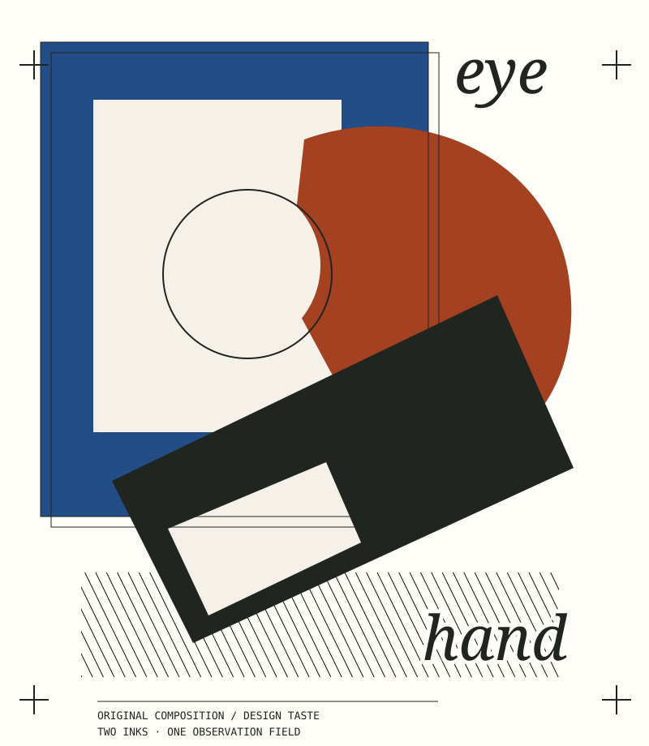
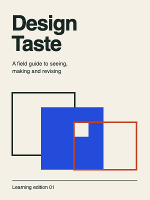

An independent visual education
Taste is a practice.
Not a preset.
Learn to notice how images work. Make a deliberate change. Keep the evidence. Develop your own reasons.
Begin with observation ↗30 records · 62 source entries · 12 study modules. No account. No universal style ranking.


The studio loop
Read a little. Look closely. Try something.
Build your eye
Twelve complete exercise contracts, from perception and typography to editorial systems and critique.
Explore the learning path →02 / AtlasKnow the context
Movements, schools, techniques and traditions stay distinct. Find the source and the limits of each claim.
Browse the source-grounded atlas →03 / LabMake a comparison
Original-only teaching and editable practice across twelve lesson scopes and thirteen distinct movement constructions. Six pixel operations and five legacy raster studies remain separate; production and human gates are not implied.
Open the working studio →
Original project evidence / not a quality guarantee
A cover with its decisions left visible.
The Revision Field direction uses repeated geometry and a corrected boundary as a metaphor for observation and revision. This is an authored interpretation, not a tested reader response.
Read the original process and limits ↗Editable SVG and flat previews exist. Native Adobe proof and human acceptance remain unverified.